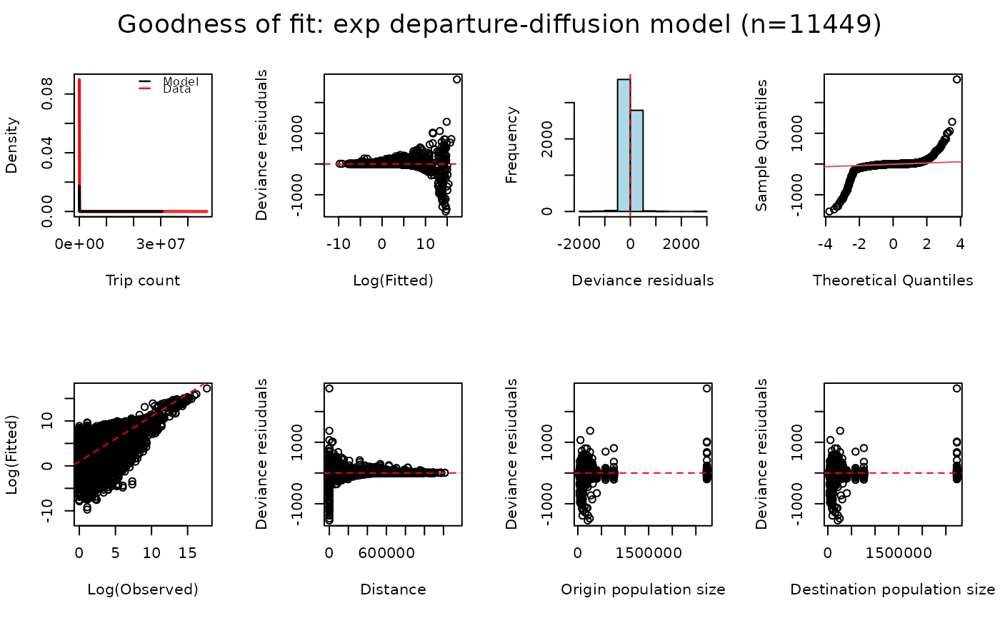
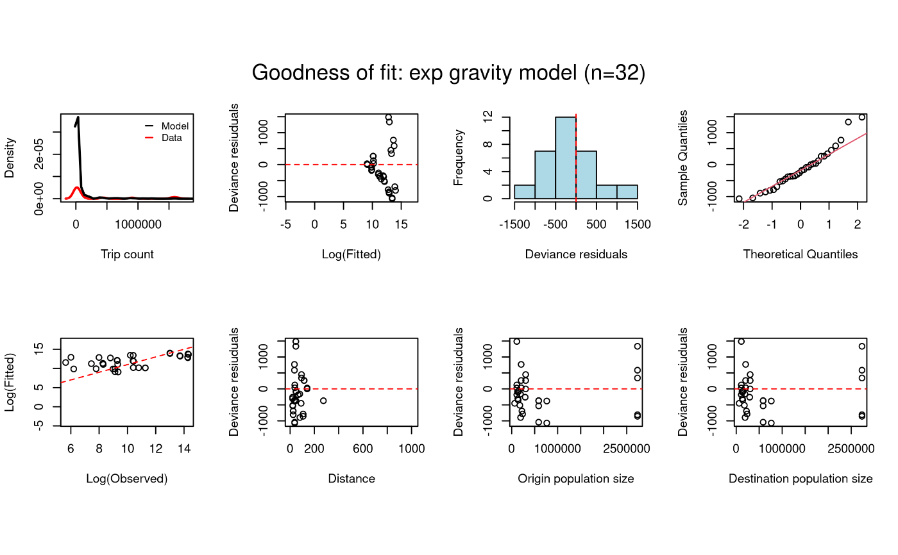

Check goodness of fit for 'nomad_model' class
check.RdThis function takes a nomad_model object and calculates goodness of fit
metrics for the underlying mobility::mobility(). If the Deviance
Information Criterin (DIC) was calculated in the supplied model object,
it is included in output. When plots = TRUE, two plots are shown containing
the posterior distribution of trip counts compared to observed data and a
Normal Q-Q plot showing the quantiles of model residuals against those
expected from a Normal distribution.
Arguments
- object
a
nomad_model()object containing the fitted mobility- plots
logical indicating whether to plot the Posterior Predictive Check and Normal Q-Q Plot (default =
TRUE)- ...
further arguments passed to or from other methods
See also
Other model:
compare(),
fit_jags(),
fit_prob_travel(),
mobility(),
predict(),
residuals(),
summary()
Examples
# Get nomad_model object
nmd_model <- nomad::model_db$zmb_cdr_2020_mod_dd_exp
# Check model fit
nomad::check(nmd_model)

#> $DIC
#> [1] 76328739
#>
#> $RMSE
#> [1] 172445.4
#>
#> $MAPE
#> [1] 23473.45
#>
#> $R2
#> [1] 0.7952939
#>
# Get nomad_model object without underlying data
nmd_model <- nomad::model_db$zmb_fb_2020_mod_grav_exp
# Model check statistics are still available as these are
# saved when model data is removed from object
nomad::check(nmd_model)

#> $DIC
#> [1] 12442470
#>
#> $RMSE
#> [1] 447193.4
#>
#> $MAPE
#> [1] 55.19494
#>
#> $R2
#> [1] 0.3721586
#>